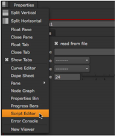

Nuke 附带了一个名为 import_boujou.tcl 的脚本，它允许您加载使用 Boujou 创建的相机。
| 1。 | 将 Boujou 相机解决方案保存为 。Txt 文件。 |
| 2. | 在 Nuke ,单击内容菜单按钮并选择脚本编辑器。脚本编辑器将在您使用其内容菜单的窗格中打开。 |

| 3. | 在脚本编辑器的输入窗格 (即下窗格) 中，输入 Nuke.tcl ("import_boujou") 。单击 运行当前脚本 编辑器顶部的按钮，或按 Ctrl + 返回 ( Cmd + 返回 在 Mac 上)。 |
| 4. | 在打开的文件浏览器中，导航到 。Txt 在步骤 1 中保存的文件。 |
摄像机、扫描打印机和组节点被加载到 Nuke 。组节点包含表示 Boujou 点的圆柱体。
提示:
你也可以打开
Nuke
的 Boujou 文本文件浏览器执行以下操作:
1.新闻
x
在节点图上打开
Nuke
脚本命令对话框。
2。在对话框中，检查
Tcl
(如果还没有检查)。
3.在命令字段中，输入
Import_boujou
.
4.点击
好
.
这些步骤可用于替换上述说明中的前三个步骤。
|
|